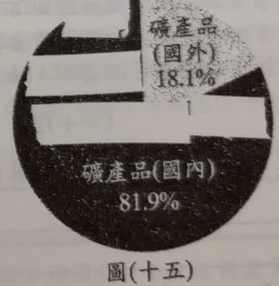
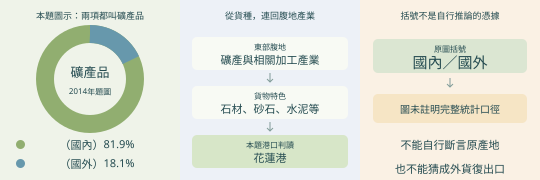
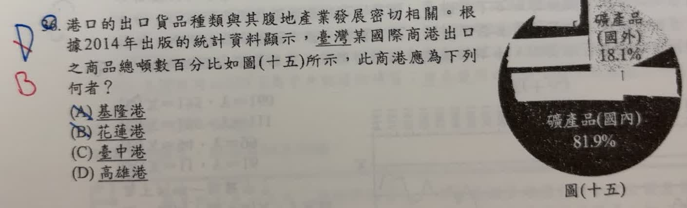

分享原卷｜第 36 題
完整原題
| 類別（原圖用語） | 占比 |
|---|---|
| 礦產品（國內） | 81.9% |
| 礦產品（國外） | 18.1% |

先想一想，再查看答案、解說與原圖
逐項解析
| 選項與原句 | 判讀 | 句意與判斷理由 |
|---|---|---|
| (A) 基隆港 | 不選 | 不能只因是重要國際商港就選它；本圖應對應東部礦產腹地。 |
| (B) 花蓮港 | 應選 | 花蓮及其腹地有石材、石灰石及相關產業，礦產品貨運特色最符合。 |
| (C) 臺中港 | 不選 | 雖也是國際商港，但在本題的礦產品結構與選項比較下，不如花蓮港典型。 |
| (D) 高雄港 | 不選 | 貨運量大、功能多元，不是單憑重要性或規模就能對上本圖。 |
詳細說明與解題步驟
圖中兩個扇形都標示礦產品，合起來是本題圖示的全部貨物；先抓「礦產品」這個貨種，而不是選最大的港。花蓮東部腹地有石灰石、大理石及相關加工產業，花蓮港是東部礦石、砂石及水泥等貨物的重要運輸港，因此選B。
圖上原標籤為「礦產品（國內）81.9%」與「礦產品（國外）18.1%」。原AI先把18.1%說成其他產品，後來又說成國外原料經臺灣再出口；這兩個說法都不是圖中已明示的資訊。尤其圖內沒有註解國內、國外的統計口徑，不能逕自把括號解成原產地，並斷言存在18.1%的外貨復出口。
港口貨運須區分國內運輸與國外貿易；同一港口可同時辦理兩種運輸。這裡保留原標籤與2014年資料時點，作答只採有充分依據的貨種及腹地關係，不把原AI推測當成圖表事實。
參考：[交通部107年交通年鑑港埠設施](https://www.motc.gov.tw/uploaddowndoc?file=yearbook%2F107%2F107YB09%2F107YB090101.pdf&filedisplay=107YB090101.pdf&flag=doc)、[花蓮港務分公司貨物吞吐量分類](https://hl.twport.com.tw/statistics/ChartThroughput?a=1133)。

① 81.9與18.1兩部分，都是礦產品
題圖標「礦產品（國內）81.9%」和「礦產品（國外）18.1%」。兩者合為100%，本題先抓共同貨種礦產品；小部分不是其他產品，也不能改成今天整個港口的貨運占比。
② 礦產品，連到東部礦產與加工腹地
花蓮及東部腹地有石材、石灰石等礦產與相關產業，花蓮港運輸礦石、砂石、水泥等貨物的特色最符合，故選B。解題是在比貨種與腹地，不是在選規模最大的港。
③ 國內與國外，別擅自補成原產地
圖中沒有註明這組括號的完整統計口徑，不能自行斷言18.1%是外國原料再出口。保留原標籤與2014年時點，作答依有根據的礦產品貨種與腹地關係。
④ 先看礦產品貨種，再連花蓮的礦產腹地
答案：B，花蓮港
- 本題兩塊都屬礦產品，81.9%＋18.1%＝100%。
- 以花蓮東部礦產與相關產業，連到港口貨種特色。
- 不把國內、國外直接等同原產地，也不猜復出口。
核對註記：已核對題幹、全部選項與必要材料；教材對應課次未確認，歸綜合。
原圖（僅本題）
